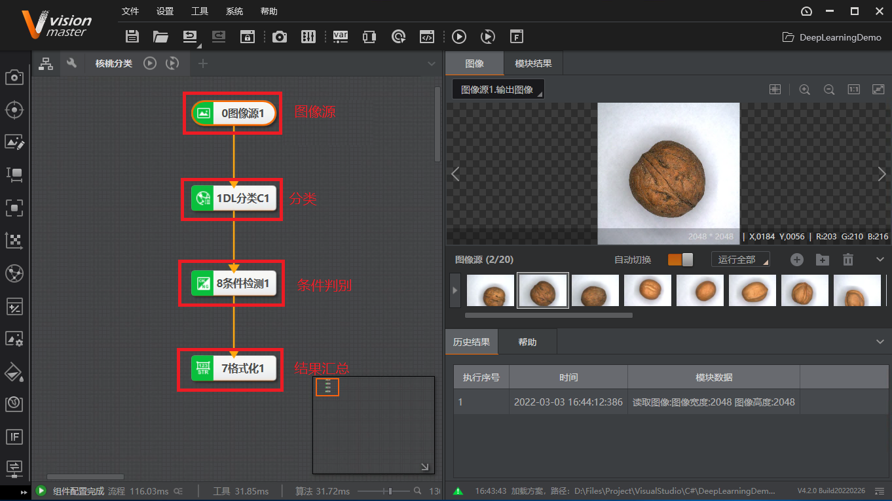
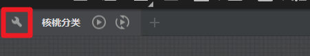
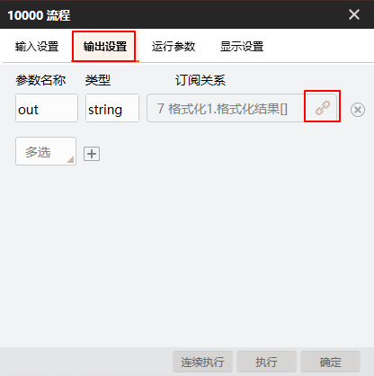
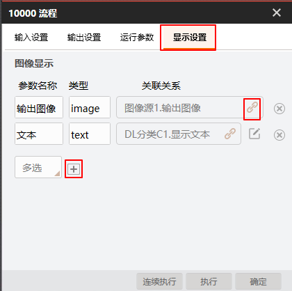
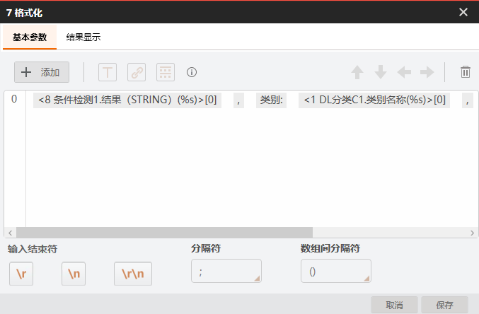
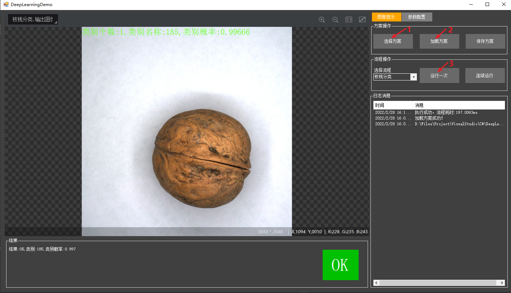
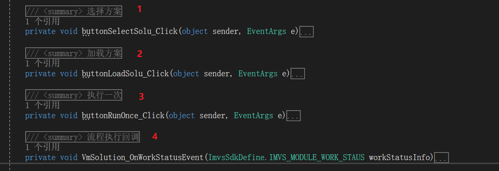
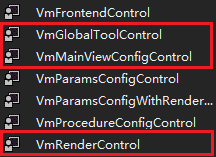
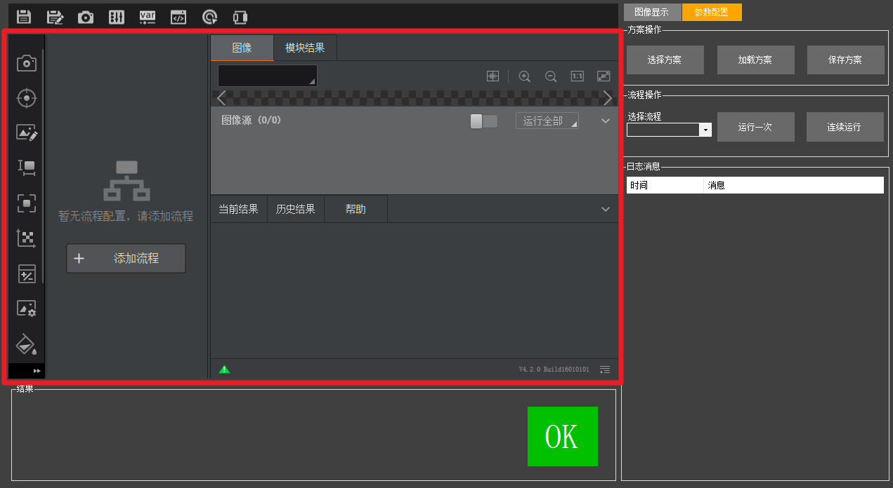

点击流程图标旁边的小扳手图标进入流程配置窗口。

通过输出设置配置流程输出结果参数，参数名为out，在二次开发中获取该参数就可以得到结果，具体如下图所示。

通过显示设置配置方案的图像及渲染结果，用于在二次开发中绑定到渲染控件中显示，配置方式如下图所示。

配置格式化模块内容。
格式化模块必须配置正确。若使用时修改了案例自带的方案，特别是修改格式化模块订阅的数据，则必须参照案例自带的方案进行格式化模块配置，格式如下图所示。
其中，主要包括检测结果、类别名称和类别准确率。具体格式为：[条件检测结果INT]，[数据项1]，[数据项2]



方案加载
单次执行：需要先实例化流程，然后调用VmProcedure类的Run成员函数执行算法流程。
连续运行
方案状态回调
结果获取：流程执行完毕进入回调中取结果，首先在回调中实例化流程对象，然后调用ModuResult中的GetOutputString()接口来获取字符串结果，输入参数为变量名。
方案保存

VmRenderControl控件：用于渲染图像数据。

VmMainViewConfigControl控件：用于显示流程配置。

VmGlobalToolControl控件：用于显示全局配置工具。